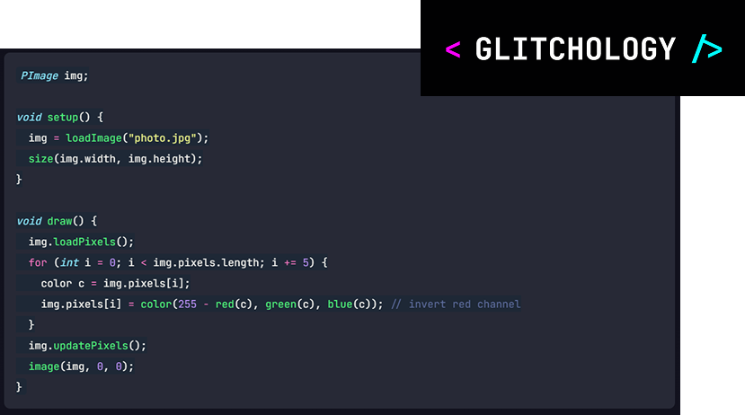
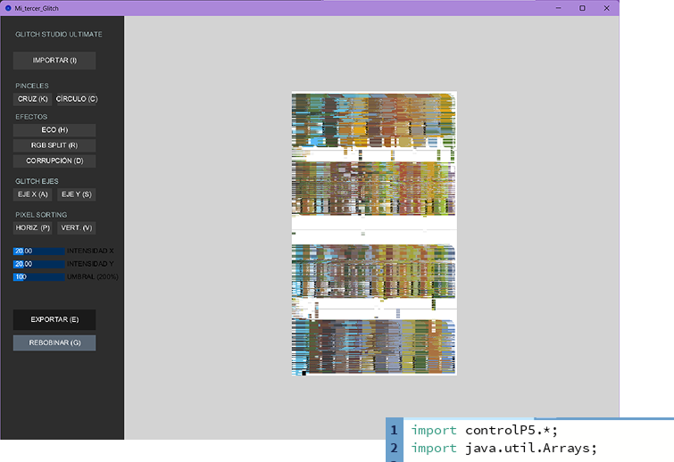

Es un entorno de desarrollo de código abierto diseñado para que artistas y diseñadores creen arte visual digital y animaciones de forma sencilla. Utiliza el lenguaje de programación Java, simplificando su estructura para permitir una experimentación rápida a través de archivos llamados "bocetos" (sketches).
Por otro lado, p5.js es la biblioteca oficial de Processing creada específicamente para la web; traslada toda la filosofía y funciones de dibujo e interacción de Processing al lenguaje JavaScript, lo que permite ejecutar los proyectos directamente en cualquier navegador de internet sin necesidad de complementos.

El primer prototipo funcionaba cambiando variables en el mismo código, de forma manual y tardada. Para hacer una demostración visual se usó la IA de Claude y Gemini para la creación de nuevas herramientas, conversión a HTML y entender la lógica de lo que se estaba implementando en cada corrección.
